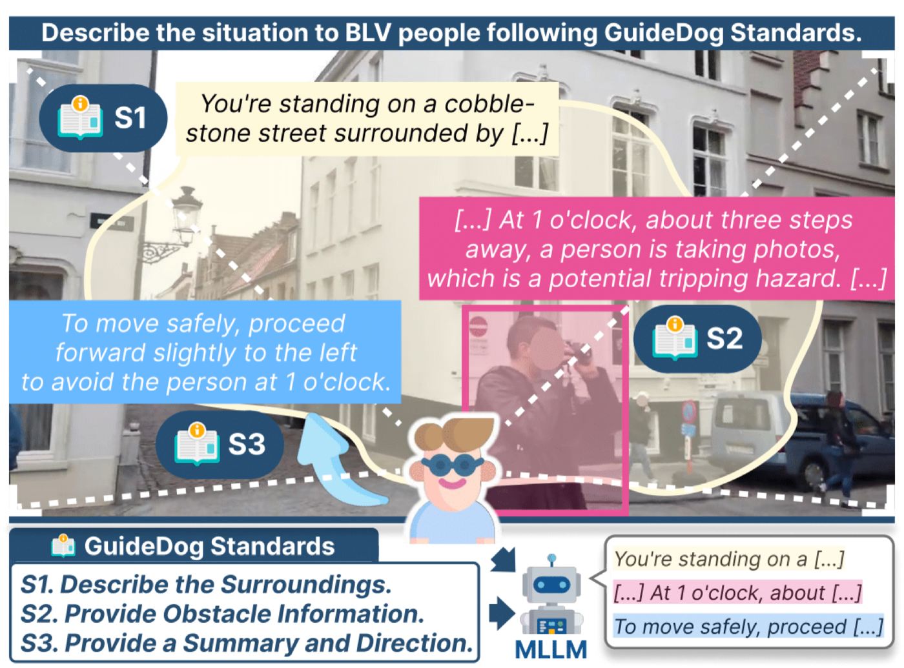
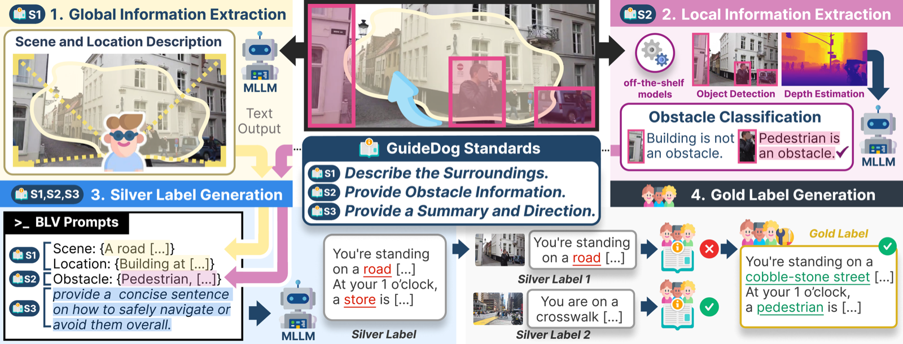
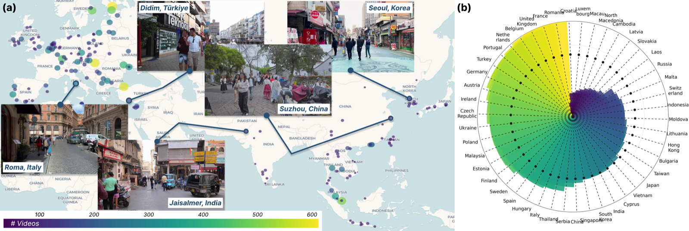
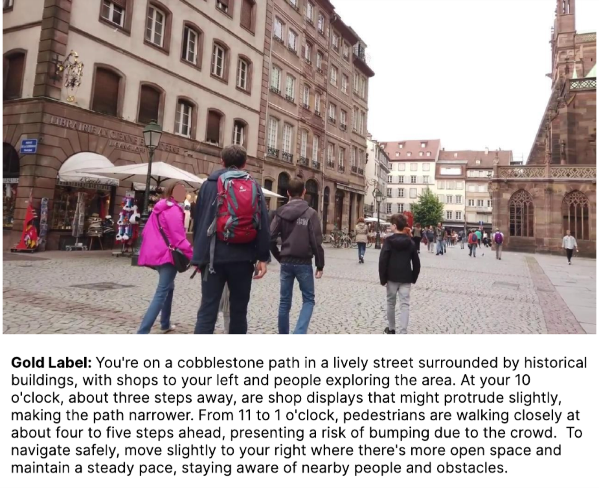
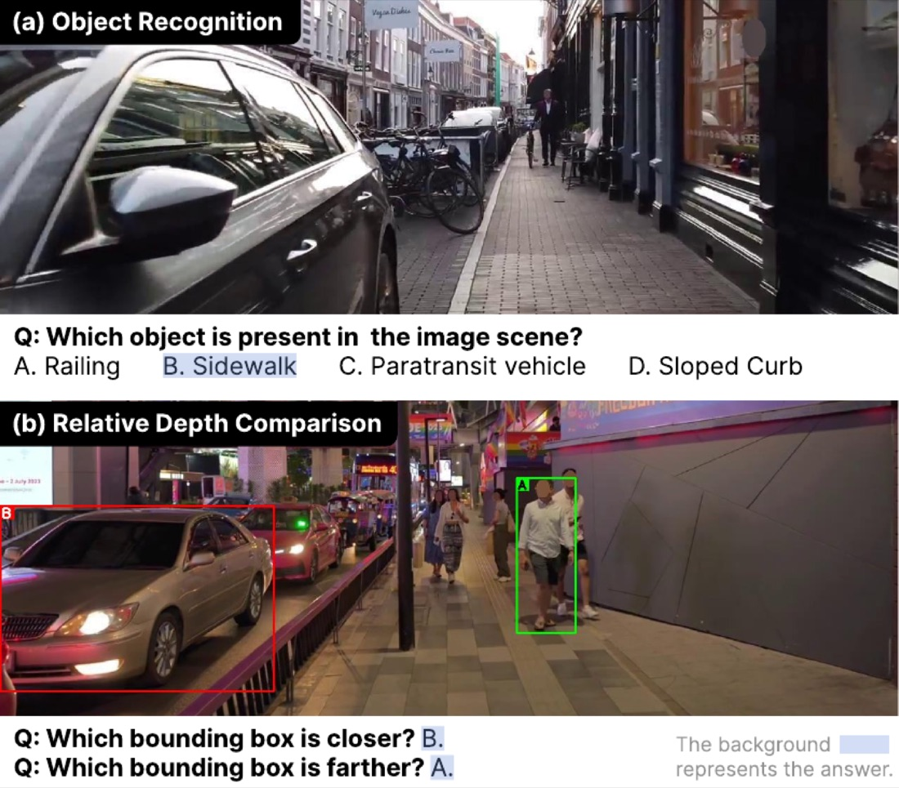

ACL 2026 Main
GuideDog:
A Real-World Egocentric Multimodal Dataset
for Blind and Low-Vision Accessibility-Aware Guidance
♣Yonsei University · ♢LG AI Research · ♡Euler Robotics · ♠Seoul National University
*Equal contribution · †Work done while at SK Telecom
Recent MLLMs open new possibilities for Blind and Low Vision (BLV) assistance, but the difficulty of accessibility-aware annotation has kept benchmarks small. We propose GuideDog, a 22K dataset of real-world egocentric walking scenes across 183 locations in 46 countries, with labels structured by three BLV guidance standards (S1/S2/S3) and a 2,106-example human-verified gold subset. We also provide GuideDogQA, an 818-sample benchmark for fine-grained object recognition and depth perception. Today's MLLMs still struggle with the spatial half of the task, especially depth-heavy obstacle guidance.

- 22,084image–description pairs
- 2,106human-verified gold
- 818QA samples
- 46 / 183countries / locations
How GuideDog differs from prior BLV datasets
| Dataset | # | Modality | Source | Geo-diverse | Annotation | BLV involvement | Task |
|---|---|---|---|---|---|---|---|
| VizWiz | 31K | Image | User photos | — | Human | Captured by BLV | VQA |
| VIALM | 200 | Image | Web | — | Human | Expert manual | Guidance |
| Merchant et al. | 48 | Image | VizWiz | — | Human | — | Guidance |
| WalkVLM | 12K | Video | Web + recorded | 10 locations | Human | Survey | Guidance |
| EgoBlind | 1.3K | Video | Web | — | Human + AI | Annotated partial | Video QA |
| GuideDog (ours) | 22K | Image | Web | 183 locations | Human + AI | Standards-based | Guidance + QA |
Three BLV guidance standards
Distilled from BLV organizations and prior research, then used as the scaffolding for every annotation in the dataset.
S1 Describe the surroundings: orient the user.
S2 Provide obstacle information: type, location, proximity (e.g. "12 o'clock, 4 steps").
S3 Provide a summary and direction: concise, low cognitive load.
Structured labels, then human verification
GuideDog is built around three BLV guidance standards (S1/S2/S3). An MLLM first drafts silver labels structured by these standards, and trained annotators then verify and refine them into gold labels. This shifts human effort from free-form writing to checking accessibility-critical details, making large-scale annotation feasible while preserving the BLV-specific structure.

Where the data lives

One annotated example

Probing perception: GuideDogQA
GuideDogQA strips away the language overhead of guidance generation and tests two perceptual skills essential for BLV navigation: object recognition (which objects are truly in the scene) and relative depth (which is closer).

What we found
① GPT-4o leads zero-shot guidance, with the largest gap on S2, exactly where depth references matter most.
② Open-source models recognize objects, proprietary models judge depth. On QA, several open-source MLLMs cannot beat random chance at depth comparison.
③ Fine-tuning closes the gap. LoRA fine-tuning Qwen2.5-VL on our silver labels gives +19.3% on depth comparison while losing only −1.8% on object recognition, and tops every model on guidance generation.
Spatial grounding, especially depth and obstacle localization, remains the hard part for BLV-grade MLLM guidance.
BibTeX
@inproceedings{kim2026guidedog,
title = {GuideDog: A Real-World Egocentric Multimodal Dataset for
Blind and Low-Vision Accessibility-Aware Guidance},
author = {Kim, Junhyeok and Park, Jaewoo and Park, Junhee and
Lee, Sangeyl and Chung, Jiwan and Kim, Jisung and
Joung, Ji Hoon and Yu, Youngjae},
booktitle = {Proceedings of the 64th Annual Meeting of the
Association for Computational Linguistics (ACL)},
year = {2026}
}